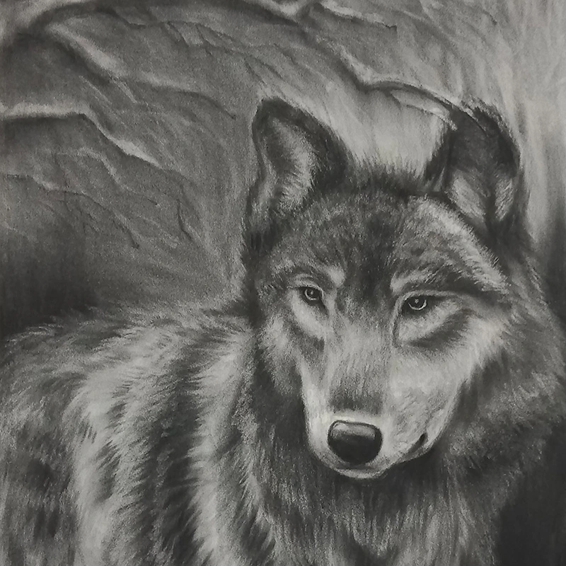
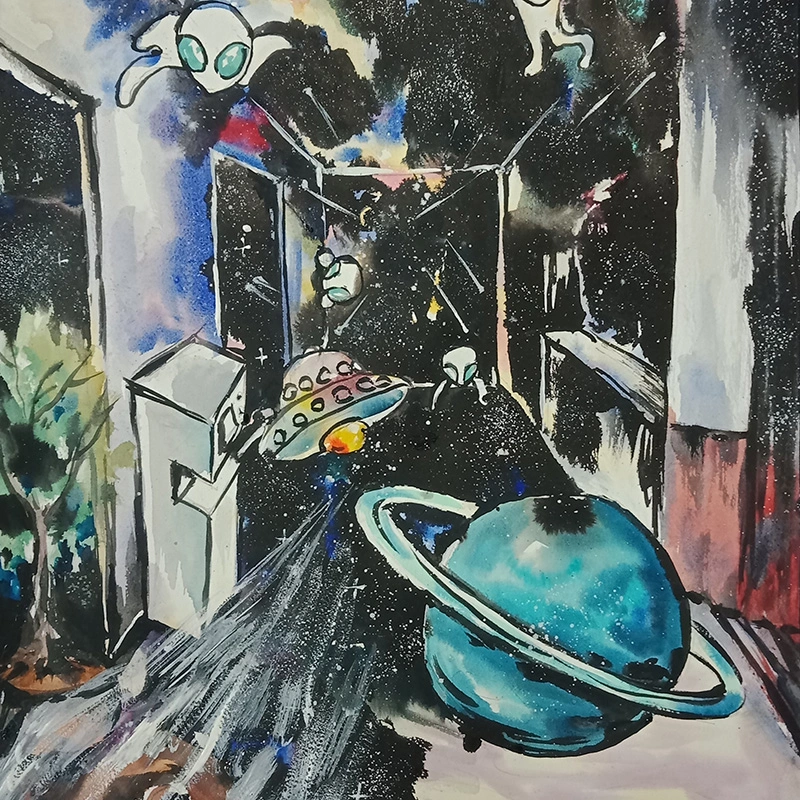
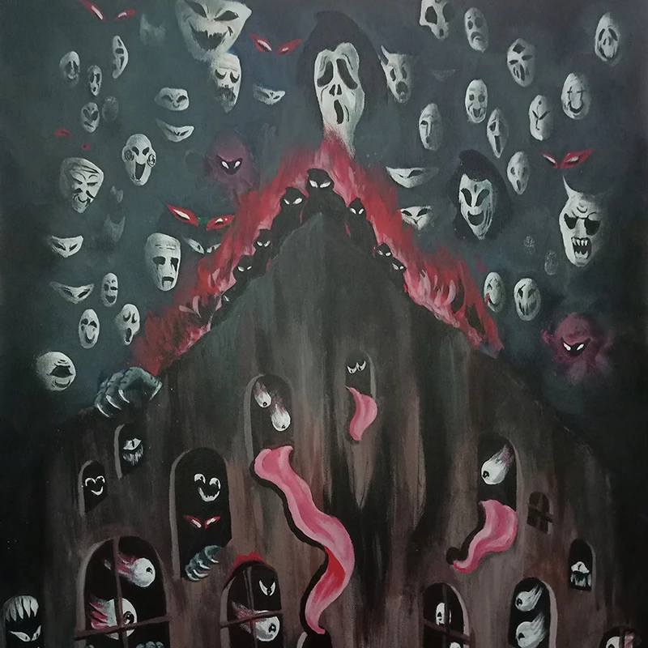
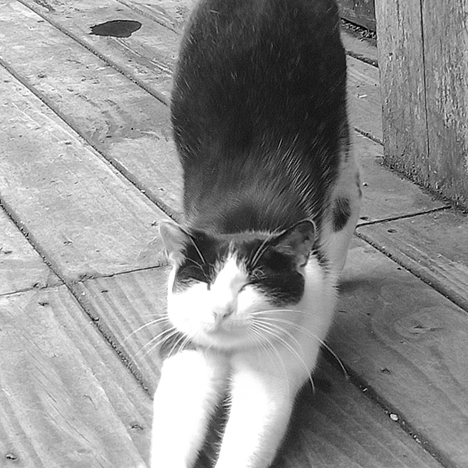
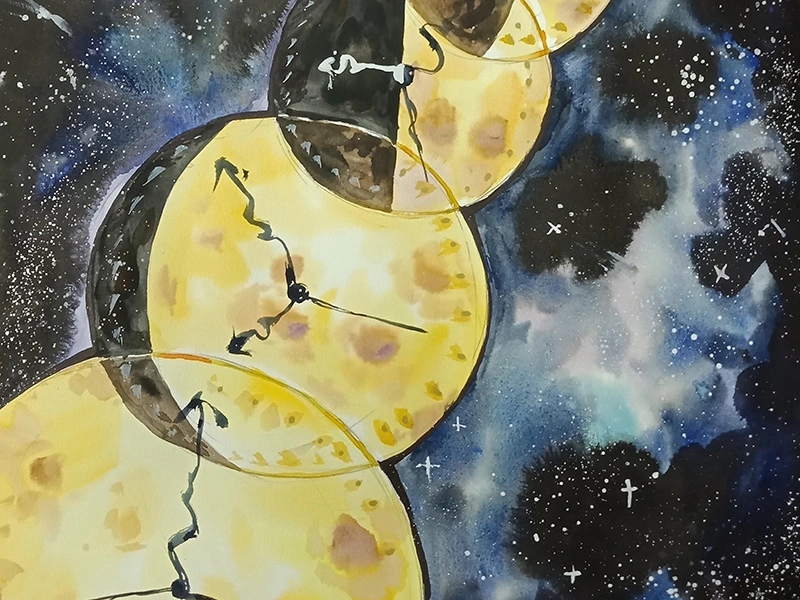
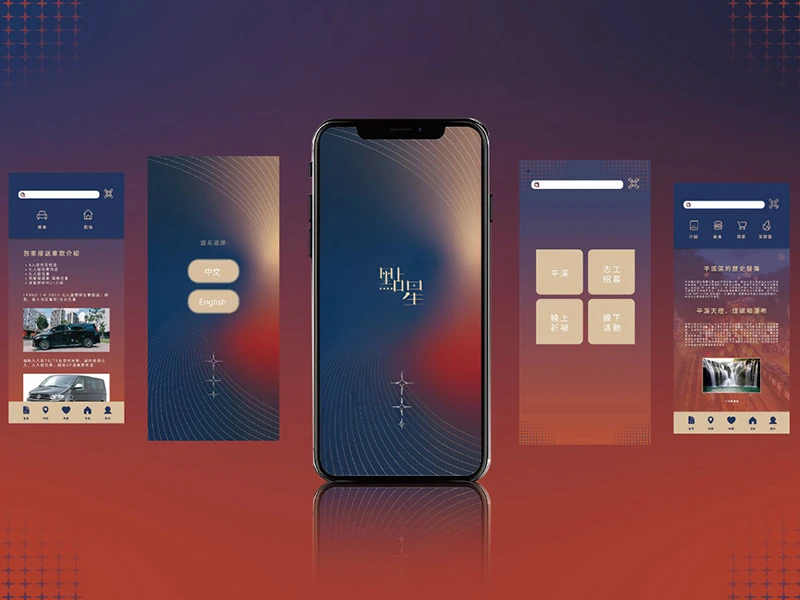
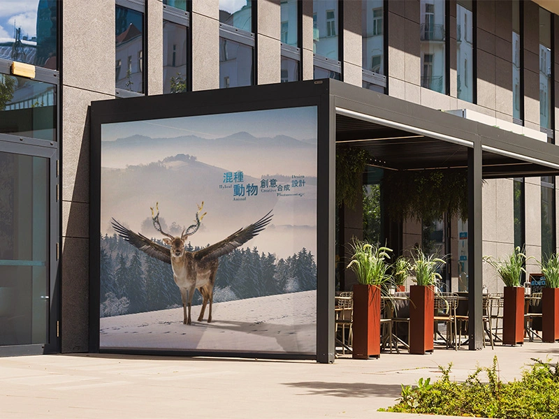

一切的基礎-素描
美術 美術創作是我視覺養成的核心基礎，長期透過繪畫練習培養對比例、線條與構圖的敏感度。本頁收錄素描、水彩、水墨與複合媒材等美術作品，呈現不同階段對美術表現形式的理解與探索，也記錄我在創作過程中的思考軌跡。 這些美術作品不僅是創作成果的呈現，更深刻影響我後續的設計與UI設計思考。紮實的美術基礎，使我在平面與數位作品中能更靈活運用視覺元素與畫面結構，同時結合攝影構圖訓練，強化整體畫面的平衡與視覺焦點，讓美術與設計之間形成自然且有層次的連結。

傳遞-平面設計
平面設計作品中，色彩搭配、字體選擇與版面配置彼此呼應，透過細節調整讓整體視覺達到平衡。不同主題的平面設計也會依照品牌調性進行風格轉換，使作品既能展現創意，也能符合實際應用需求。部分專案融合插畫與攝影素材，提升畫面溫度與故事性，讓平面設計不僅傳達資訊，也能創造情感連結

創意-複合媒材
攝影是我觀察世界的重要方式，透過鏡頭記錄光影、空間與情緒。本頁收錄生活攝影與主題攝影作品，內容涵蓋人物、風景與細節紀錄，呈現我對畫面構圖與氛圍的理解。 攝影訓練讓我在美術與設計上更具畫面敏感度，無論是繪畫構圖或UI設計版面安排，都能快速掌握視覺焦點。部分作品也會轉化為設計素材，應用於平面設計或介面視覺中。 透過攝影作品的累積，我學習如何用畫面說故事，讓作品不只停留在紀錄層面，而是成為整體創作的一部分，串連美術、設計與數位作品之間的關係。

捕捉瞬間-攝影
攝影是我觀察世界的重要方式，透過鏡頭記錄光影、空間與情緒。本頁收錄生活攝影與主題攝影作品，內容涵蓋人物、風景與細節紀錄，呈現我對畫面構圖與氛圍的理解。 攝影訓練讓我在美術與設計上更具畫面敏感度，無論是繪畫構圖或UI設計版面安排，都能快速掌握視覺焦點。部分作品也會轉化為設計素材，應用於平面設計或介面視覺中。
平面設計視覺傳播
我是鍾樺萱，一位專注於平面設計與視覺創意的自由接案設計師。我畢業於大學平面設計系，從國中美術班開始就熱愛繪畫與創作，並在學期間累積了平面設計、攝影、影片剪輯與網頁設計的基礎能力。這些多元技能讓我在接案時能夠提供完整的視覺解決方案，無論是品牌設計、廣告視覺或數位媒體呈現，都能兼顧美感與實用性。
我曾有半年正式的平面設計工作經驗，在專案中培養了溝通、時間管理與客戶需求分析的能力。現在我專注於自由接案，接觸各類型的設計需求，並持續提升Procreate繪畫技巧與網頁設計能力，希望能將創意轉化為高質感的作品。同時，我注重每個作品的細節與品牌精神，確保最終呈現符合客戶期待並具有市場價值。
未來，我希望透過接案累積更多跨領域經驗，建立個人設計品牌，也期望與不同領域的客戶合作，創造具影響力的視覺作品。我相信設計不僅是美感的呈現，更是解決問題與傳遞訊息的力量，而我希望成為那個能把創意與策略融合的設計師。

UI資訊設計
UI設計作品以使用者體驗為核心，結合視覺設計與操作邏輯，打造直覺且舒適的介面。本頁收錄APP與網站介面作品，從流程規劃、版面配置到視覺風格，完整呈現設計思考過程。
在UI設計中，我善用美術與繪畫背景，讓畫面在功能性之外仍保有視覺美感，並透過攝影或插畫元素增加情境感。設計過程會反覆檢視使用流程，確保操作清楚、資訊不過度堆疊。

創造設計
我重視與客戶的溝通，理解需求後，將概念轉化成獨特且具有辨識度的設計。除了平面設計，我也具備攝影、影片剪輯與數位媒體設計能力，能提供多元的創意解決方案。我的目標是幫助每個品牌傳達獨特故事，創造令人印象深刻的視覺體驗。
